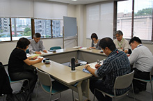

第1回福祉担当者会議 報告
- 【日 時】
- 10月17日(水)15:00～17:00
- 【場 所】
- 埼玉県生協連・会議室
- 【出席者】
- 6人(さいたまコープ・パルシステム埼玉・生活クラブ生協・医療生協さいたま埼玉県労済生協、事務局)
1．協議・報告事項

（1）2012年度福祉の活動について
 福祉現場の見学について
福祉現場の見学について
前年度取り組めなかった、現場見学について話し合い東京都生協連の杉並区での｢居場所づくり｣の取り組みについて、学習見学を企画します。
 地域団体との連携事例研究について
地域団体との連携事例研究について
各生協の連携の現状を報告いただきました。地域での連携、協働についても情報交流を図っていくこととしました。
（2）担当者会議での福祉学習活動について
- 地域での福祉ネットワークづくりの視点で、行政の考え方、福祉の方向性について学んでいくこととしました。
- 今年度の福祉学習会を2013年2月開催に向け、準備することとしました。今年度は、まちづくり、たすけあいをテーマに、今後、内容を検討していきます。
2．交流（会員生協より活動報告と交流）
＜さいたまコープ＞
たすけあい活動ミニハートの全体交流会を4月に開催、くらしと福祉委員会は高齢化がすすむ埼玉県で自分たちができることや社会保障と税の一体改革等をテーマに学習、6月から8月には、｢地域支え合いマップ体験担い手要請講座｣(全3回)を実施、下期は引き続き｢減災の取り組み｣や｢認知症サポーター養成｣などの活動に取り組みます。
＜パルシステム埼玉＞
福祉プロジェクトを設置し、福祉政策策定とまちづくりを検討しています。たすけあい活動｢いきいきネットワーク｣は、基本的な運営と利用方法の見直しをすすめています。
＜生活クラブ生協＞
介後保険事業は、4月の制度改定後の対応を行ってきました。地域福祉を、組合員だけでなく地域に広げていくために、｢ボランティアグループ｣づくりに取り組んでいます。
＜医療生協さいたま＞
くらしサポーター制度を12月スタートします(川口市､ふじみの市)。無料低額診療事業は5事業所に､県内85ヶ所に安心ルームが広がりました。
＜埼玉県労済生協＞
昨年度からの暮らしの安心サポートサービス(NPOとの協働)を今年度も進めています。全労済組合員の特典として、健康、年金、育児、法律、介護、住まいの相談を受け付けています。